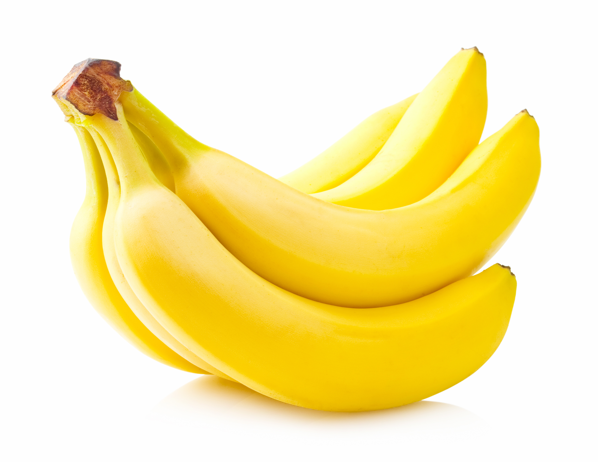
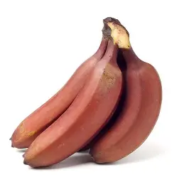
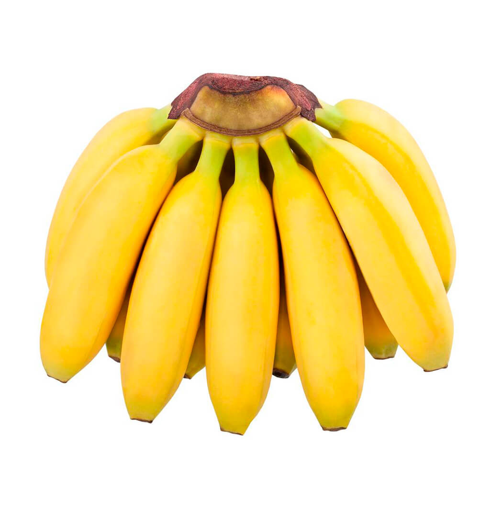
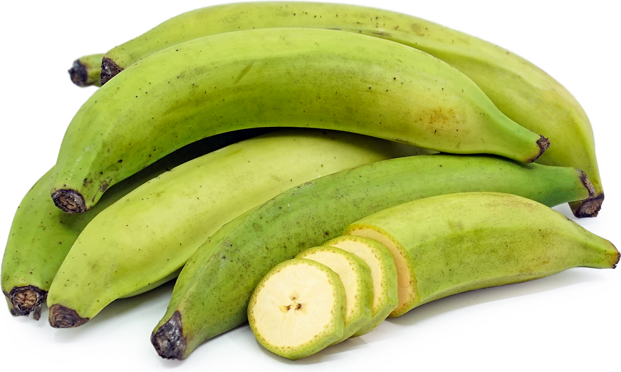

The banana page!
This page will tell you about bananas.
Types of Bananas

Cavendish
The most common type of banana.

Red Banana
These bananas have red skin, hence its name.

Lady Finger
Also known as baby bananas, they are smaller and sweeter than Cavendish bananas.

Plantain
A type of banana that is typically cooked before eating.
Health Benefits
Bananas are not only delicious but also packed with nutrients. They are a great source of potassium and vitamin C.
Frequently Asked Questions
Are bananas good for you?
Yes, they are a great source of potassium and other vitamins.
Can you eat the peel?
While edible, the peel is not commonly eaten.